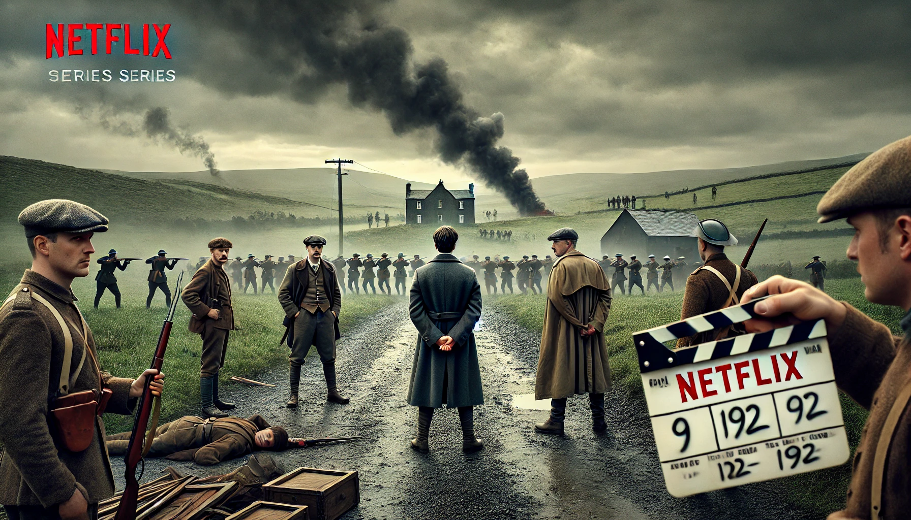
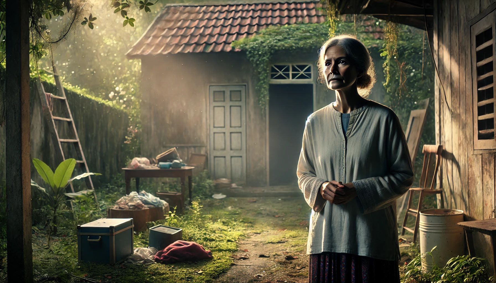

A Netflix está desenvolvendo uma minissérie sobre a Guerra Civil Irlandesa, que ocorreu entre 1922 e 1923.
A série será estrelada por Justin Hartley, conhecido por seu trabalho em "The Flash" e "This Is Us". A trama seguirá os eventos que levaram à guerra civil após a independência da Irlanda do Reino Unido, destacando as divisões entre nacionalistas e lealistas. A produção é esperada para ser uma mistura de drama histórico e ação, com um foco em personagens reais e fictícios que viveram durante esse período tumultuado.
A crítica já está antecipando a série como um dos grandes lançamentos do ano. Analistas esperam que a série não apenas ofereça entretenimento, mas também uma importante reflexão sobre as consequências políticas e sociais da guerra civil. Espera-se que a produção aborde temas como lealdade, traição, e o impacto da guerra na vida cotidiana dos cidadãos irlandeses.
A Prime Video está prestes a lançar uma série documental intitulada "Mulher da Casa Abandonada", que promete capturar a atenção e os corações dos espectadores. A série narra a história tocante de Maria Antônia, uma mulher que, por motivos desconhecidos, vive sozinha em uma casa abandonada há mais de duas décadas.
A série documental seguirá Maria Antônia em sua rotina diária, oferecendo um olhar profundo sobre os desafios que ela enfrenta e as maneiras criativas que encontra para sobreviver em condições tão adversas. A produção conta com uma equipe dedicada de documentaristas que passaram meses convivendo com Maria, capturando momentos de vulnerabilidade e força.
Estrelado por Timothée Chalamet e Zendaya, a trama acompanha Paul Atreides, um jovem prodígio que viaja para o planeta mais perigoso do universo com o objetivo de proteger sua família e salvar o povo de Arrakis.
Após restaurar o coração de Te Fiti e trazer a paz de volta à sua ilha, Moana se tornou uma líder respeitada e amada por seu povo. No entanto, os oceanos têm um novo chamado para ela.
Desde sua ascensão como Dragão Guerreiro, Po tem dedicado sua vida a proteger o Vale da Paz e a treinar a próxima geração de mestres do kung fu. No entanto, uma nova ameaça surge, vinda de uma antiga profecia que fala de um Dragão Celestial capaz de destruir o mundo.
WatchBox@gmail.com
Todos os direitos reservados
(47) 9 9176-4009